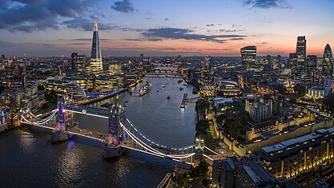

History
Administration
Geography
Demography
Economy
Transport
Education
Culture
Recreation
Sport
Notable People
From Wikipedia, the free encyclopedia
London is the capital and largest city of both England and the United Kingdom, with a population of 8,866,180 in 2022.The wider metropolitan area is the largest in Western Europe, with a population of 14.9 million. London stands on the River Thames in southeast England, at the head of a 50-mile (80 km) estuary down to the North Sea, and has been a major settlement for nearly 2,000 years. Its ancient core and financial centre, the City of London, was founded by the Romans as Londinium and has retained its medieval boundaries. The City of Westminster, to the west of the City of London, has been the centuries-long host of the national government and parliament. London grew rapidly in the 19th century, becoming the world's largest city at the time. Since the 19th century, the name "London" has referred to the metropolis around the City of London, historically split between the counties of Middlesex, Essex, Surrey, Kent, and Hertfordshire, which since 1965 has largely comprised the administrative area of Greater London, governed by 33 local authorities and the Greater London Authority.
London
Capital City
